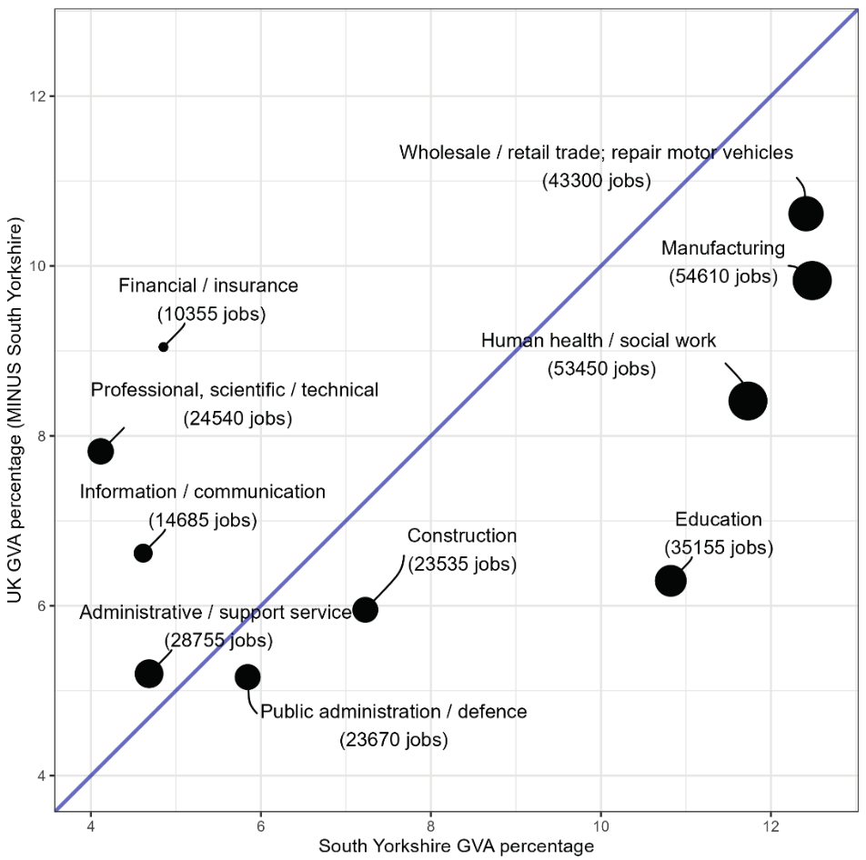
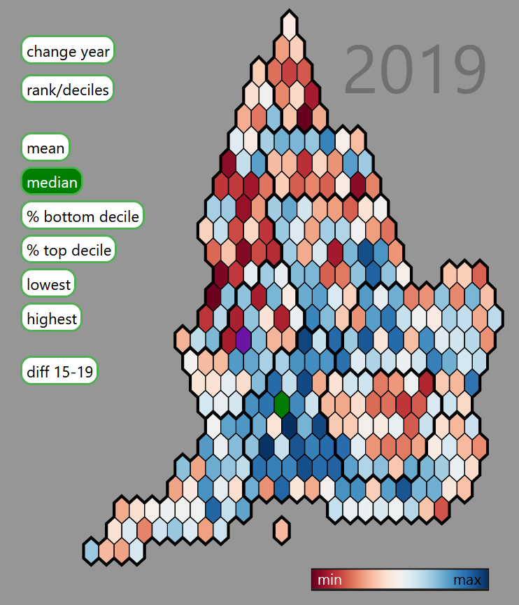
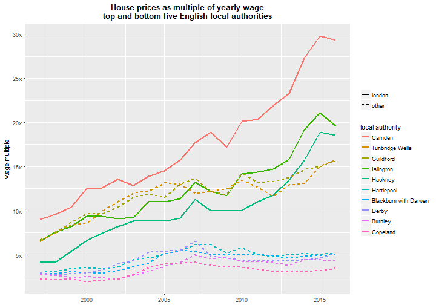
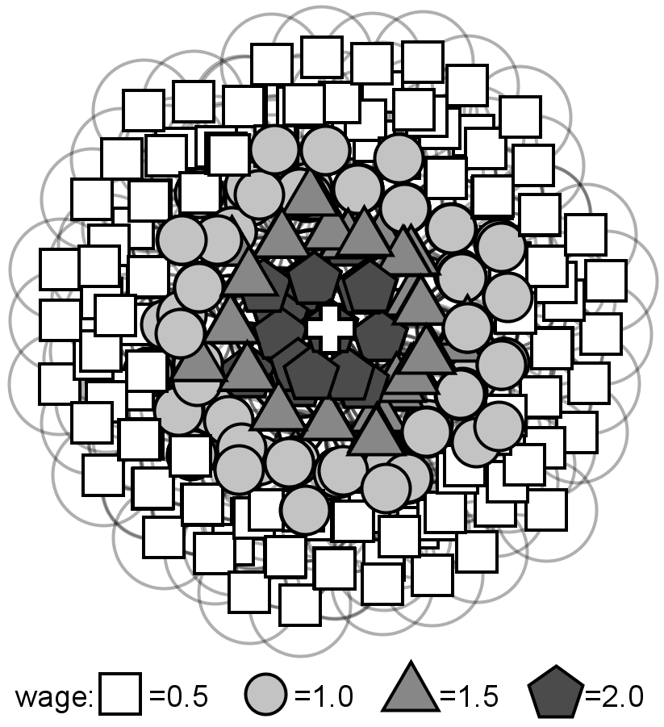

Dr. Dan Olner
Data scientist / geospatial analyst / political + spatial economy / climate / researcher / writer
Y-PERN policy fellow, University of Sheffield / South Yorkshire Combined Mayoral Authority (SYMCA)
danolner at gmail dot com / d dot olner at sheffield dot ac dot uk. Github. Github blog. Bluesky. LinkedIn.
- I love collaborating with people to build things, creatively applying appropriate methods/technologies, thinking about the whole picture (often spatial economics / political economy related) and using data viz / writing to communicate.
- Complex technical challenges are the best thing, especially if they involve geography.
- I want to contribute to building thriving regions and a stable, zero-carbon biosphere. “The point is to raise up our humanity. Imagination and hope will be our twin guides.” (Roberto Unger)
- Writing is thinking. See below for topics I write on. See this Sheffield Writers’ Workshop profile for a bit of info about my fiction. (I wrote a sci-fi book, still not available anywhere! Have a short story in the meantime.)
Take a look at the project list below to get a sense of what I do.
(p.s. header typology produced by combining different Stable Diffusion image AI outputs, using “Giger industrial machinery” as the prompt. Input is plain text.)
{kind=link}
Projects

Regional economic analysis in South Yorkshire as part of working with Y-PERN
- Worked as part of a team on SYMCA’s Plan for Good Growth and Skills Strategy, published Spring 2024.
- Sector analysis 3-pager here; deeper look at code and data including walkthroughs here. Stuff I think about the power of open data, including data/code, here.
- Trying to make accessing / analysing / visualising slightly tricksy but amazing data easier. For example, turning ONS business data into accessible reports. (Wrangling issues discussed here.)
- Collecting links to open code and data for several related reports / analyses on the github blog.
- Work continues as new government and regions try to arrive at refreshed local growth plans and a national industrial strategy that all make sense together.
- Co-organising a SYMCA / Y-PERN policy forum to bring together policymakers and experts around topics – writeup of first session here.
- Thinking about how to strengthen the glue between university work and policy in the region. This post by SYMCA’s assistant director of growth, business and skills reflects on what works (and doesn’t!)

Re-wiring the spatial economy for zero carbon: how will it impact the UK’s regions and industries, and what energy justice implications could it have?
- Built a model of scenarios for possible future changes in UK internal trade flows due to distance cost change and its knock-on effects.
- Mostly, the results demonstrate that spatial economics and distance still matter, and matter more than ever given the transition challenge we face (see paper link below for specific geography/industry effects).
- Data: UK input output flows, made into spatial flows by linking to the Business Structure Database; UK regional transport data to estimate how trade drops off over distance internally (it does, strongly – see image).
- Technologies: Stata for the main model (for reasons), R and ArcGIS for visualisation
- Paper: “The spatial economics of energy justice: modelling the trade impacts of increased transport costs in a low carbon transition and the implications for UK regional inequality” (Olner, Mitchell, Heppenstall, Pryce) in Energy Policy (2020).
- Submission to the UK2070 Commission here. Visualisation of trade/money flows here.

Do windfarms affect house prices in Scotland? A project for ClimateXchange Scotland, with Gwilym Pryce, Stephan Heblich and Christopher Timmins.
- Accounting for building heights and landscape, I built a line of sight framework for identifying which properties in Scotland can see wind turbines and drafted the report. The framework was used to statistically search for any house price affect (we didn’t find one).
- Bespoke Java program for the main line of sight model / Python in QGIS / R
- This presentation goes into more detail, explains all the data sources, has many pretty maps and shows how the line of sight model was also used to identify green space visibility (e.g for Glasgow, image on right – redder can see less green space, blue properties can see more, hence blue edging around parks).

A tale of two countries: a data story tool for examining changes in English inequality using the index of multiple deprivation.
- Aim: an online interactive tool, with a built-in story that guides users through inequality shifts from 2015 to 2019, and how to use the tool to compare deprivation in different local authorities.
- D3 / Javascript / R (see the blog post for more info).

Harmonised UK Census data 1971-2011: A project to make consistent geographies and categories over five Censuses for Great Britain and Scotland, for a few key variables.
- Developed a method to combine some wards to overcome a disclosure issue in the original Census data, producing a bespoke consistent geography (as well as harmonising changing variable categories over the decades).
- The GIF on the right: non-UK-born, change in London from 1971 to 2011.
- Used in “Estimating the Local Employment Impacts of Immigration: A Dynamic Spatial Panel Model” (Fingleton, Olner, Pryce) Urban Studies (2020). Somehow, that journal’s most downloaded article ever.

“Systems not Lightbulbs: building pathways to zero carbon in higher education”
- A practical guide to building zero carbon in higher education, developed with the team at Sheffield Carbon Neutral University, originating in an event we organised.
- I was a member of the event and guide team, co-writing and designing the layout, in consultation with Celia Mather.
- Contains ideas and tools for movement-building, strategic thinking for senior leaders, ways to engage with management and methods for prototyping and scaling up.
- Includes case studies of Edinburgh University’s Zero by 2040 strategy and Solar SOAS.
- Illustrations by Eliot Robinson.

- Used for communicating Census and other variables to members of the public and public sector workers (also discovering these were useful for blind people to interact with data).
- This one is violent crime in Rotherham. (Town centre Friday night peak explains the huge data skyscraper.)

Finding “social frontiers” in Rotterdam and exploring how they affect household mobility
- Working with TU Delft in the Netherlands to analyse the incredibly rich Dutch microdata for Rotterdam (they have info on every individual and household, including yearly location to 100m^2).
- Examining “social frontiers” – places with very different demographics pushed right up next to each other – and unpicking how movement differs in those areas
- This presentation to the 2021 People Place Policy conference has more info (paper in review).
- Image is a zoom into the Rotterdam map of frontiers (in black) showing the geography of “non-western” (green) vs at least 3rd generation Dutch households (brown).
- Paper: “The conflicting geographies of social frontiers: Exploring the asymmetric impacts of social frontiers on household mobility in Rotterdam” (Olner, Pryce, van Ham, Janssen). Environment & Planning B, 2023.

How are house price moves linked across space? Visualising the network of linked house price movements in Glasgow.
- An example of how bespoke data visualisation can reveal otherwise invisible dynamics. (Blog post linked above for full discussion.)
- Underlying data (produced by Nema Dean): a matrix of correlations for house price moves over a 3 month period for every postcode pair in Glasgow – do prices move in tandem in separate spatial locations?
- Visualisation: not only do they move together, there are underlying spatial patterns of how those movements change across distance (see blog post). And also, there are completely separate market areas; the GIF shows correlated price movements for postcodes on different sides of a canal that separates a more and less deprived area (green circle, top left).
- Java/Processing for the interactive visualisation; R for data wrangling.

Teaching: R workshops and quantitative methods
- I have taught several R workshops to PhD students and public sector workers introducing the principles of wrangling and visualising data in R, as well as one workshop for Sheffield’s R users’ group introducing R for spatial analysis, where we made a pub crawl optimiser that accounted for Sheffield’s hilliness (the group meets in the Red Deer pub, so seemed appropriate).
- I taught a 1st year undergraduate module introducing quantitative social science at Sheffield Methods Institute, Sheffield University. Students learned R programming, regression modelling and a range of other social science quant ideas including reproducibility, causal inference and geospatial analysis.

PhD: “an agent-based modelling approach to spatial economic theory.”
- As Paul Krugman has pointed out, geography and distance mess with traditional economic methods so much that the most common approach is to pretend they don’t exist. A consequence of this: quantitatively assessing the impact of spatial economic changes due to zero carbon transition is not something we have the tools for.
- Predictably, the PhD didn’t solve this massive issue – instead, it used agent-based modelling (and an exploration of economic history) to dig into the theoretical guts, finding a novel way to explore spatial economics that could produce versions of other models like urban Alunso Muth Mills style (image on the right; paper in Computers Environment & Urban Systems here) and Krugman’s core-periphery model.
- I built an interactive modelling framework in Java for the PhD. It had some lovely outcomes I should have caught on youtube.
- I did catch one outcome on video: the time I accidentally made some kind of predatory life form. Those are cities, in theory. Agents in the green blob (city dwellers or possibly body cells) prefer a mix of goods; the red blob agents are happier with a single good. That uncanny appearance of intention is maybe not accidental: optimising costs is a central part of nature. (Also see blog post on the nature of intention.)
- The PhD actually started off as: “Can agent-based modelling help shed light on the possibilities for steering self-organised systems like the economy? Can it help robustly question assertions by e.g. Hayek about the semi-religious awe we should hold for the price system?” This is the old blog “about” page explaining the original idea. Several other posts in the archive outline below talk in more depth about this. Also, turns out someone else did that PhD.
Other stuff:
- An abstract model of migration entropy: a little spatial agent model (programmed in R) making a simple point – you can get what appears to be “white flight” without the “white” group having any out-group preferences at all, purely through dynamic churn and an incoming group having some of their own preferences. This is not to deny the existence of “white flight” necessarily – rather to point out, it’s possible to mis-identify what’s happening if we don’t pay careful attention to dynamics.
- Carried out a national survey analysis project for Good Things Foundation, Sheffield, producing a statistical report.
- Sometimes do data for good things in Sheffield.
Extremely other stuff:
- Correcting the Global Warming Policy Foundation’s front page temperature graph. Poor things, it’s almost as if they cherry-picked. (Java/Processing)
- Every London house price in 3D 1995-2016. Tracking up into the stratosphere of the highest prices. (Java/Processing)
- Random walking across a bridge (while drunk, so possibly after using the pub crawl optimiser). A visualisation for showing how certain we can be about uncertainty. (Processing.js)
- Made a motion detection system for turning people into monsters. Video example here, code here. Went down well at a party. (Java/Processing + Kinect)
- Occasional maker of hallucinogenic maps. (QGIS)
Writing
Writing (and reading) is a very special part of being human. As well as my academic / technical / report stuff, I write about a range of topics (see posts here and on the right, and the archive selection below) and have also written a near future sci-fi book called “The Ink that Draws the Maps” (nice to get geography in there!) It’s currently being rejected by agents, so most likely self-publishing soon. More info on the book here.
Writing community has become essential to me. I’m part of Sheffield’s wonderful Writers’ Workshop and Lisa Munro‘s more American-leaning group (without which the sci-fi book would never have been finished).
Below, I’ve listed my favourite writing from the previous incarnation of this website, coveredinbees.org (named as a hat-tip to emergent systems, essential to the PhD). You’ll find writing about what forms of human organisation are possible; various economic, spatial and methods ideas; posts on climate; stuff about visualisation and data; and a long list of other little curiosities.
Most of my academic writing is linked in the project list above; here’s my Google scholar page for the small remainder.
Best of Coveredinbees
- Three adaptive landscapes: how humans are natural distributed systems makers, what Balinese rice pest management, Peruvian potato growing and the market economy have in common, why it’s all tangled up with magic and why it means Hayek was wrong.
- “At last, the people!” Stafford Beer’s model of the Chilean economy. Via this UMIST lecture by Beer, a discussion of how he understands the role of economic data (“algedonics”) in his Cybersyn system. Mulling Beer and Hayek’s opposite views on how to guarantee freedom: Stafford Beer believes you can “design for freedom”, Hayek believes human design is precisely the thing that ends freedom. “Beer argues that the machinery of freedom is built into his system, just as Hayek argues it’s woven into our evolved institutions. So why can it be built into the machinery of institutions, but not the machinery of machinery?” (Overlaps with the socialist economic calculation debate.)
- Economics: reform or revolution? How building an economic model for the PhD changed my view of economic methods and micro-economics, and why it’s made me unsympathetic to attacks on caricatured versions of economics. As I say in a different post, “That’s annoying, wrong and that used to be me.”
- Cars shape places. So what will places look like in a hundred years’ time? Bouncing off a Glaeser quote showing how radically the car transformed city layout (from hub/spoke to something much more decentralised and spread out). So, what will happen as we transition to zero carbon? Maybe historical examples – like how containerisation radically re-wired port cities, including Liverpool – might help.
- What’s the difference between a box-plot and an x-ray? Why understanding what our brains bring to visualisation is so important. X-rays require a tonne of guided training before you can see anything at all. Boxplots need some training, but with a little application can make sense fairly quickly. Infographics have the specific goal of communicating clearly to an untrained lay audience. Also talks about how visualisation for personal comprehension (e.g. making a mindmap, which will make zero sense to an outsider) is useful, but can lead visualisers to misunderstand what others can see in a viz.
- Economic self-organisation: at home in humans. Hayek insisted that the discovery of the price system was borderline miraculous, and saw claims that we could design better as no more sane than a termite saying they had a blueprint for a better mound. But there’s a parallel to how our vision of the emergence of life has shifted from “near-impossible” to Kauffman’s picture of life being “at home in the universe”, built right into the mathematics of self-organisation. In this vision, life emerges right out of the logic the universe runs on. We sorely need that same collective sense in how we view human organisation. Bonus Jane Jacobs / Elinor Ostrom, and discussion of the difference between evolutionary and economic meanings of efficiency.
- Utility is useful and planets don’t love each other: using an example from transport economics (“savings in walking and waiting times are valued at between two and three times savings in on-vehicle time – parameters that have proved to be remarkably robust over the years”) to argue that utility theory is super-useful for the level of explanation it works at and doesn’t need any extra explanatory juice. E.g. “Pinning utility onto rationality is not necessary – any more than the theory of gravity requires planets to love each other.” This in no way stops anyone from digging deeper if required.
- Humans: nought but shipping containers that need to sleep at night: “Humans can be value dense, just like anything else you shift on a truck and back into a factory. But, as production inputs, they have some idiosyncracies that set them apart from coal or crankshafts or hard drives…” Why the concept of value density is super-useful in spatial economics (despite seemingly only being used in logistics). It’s useful for understanding why Glaeser-style arguments about the irrelevance of transport costs aren’t uniformly true (e.g. it depends on the point in logistics chains; earlier points – raw materials, say – are less value dense and distance is much more important).
- “Moloch, whose blood is running money!” Can supra-human systems have intention? Includes ponderings on an evolving boids model I made that seemed to produce intention & Pollan’s point that humans are just “pawns in corn’s clever strategy to rule the Earth”. “This notion that emergence or corn or money might have its own agenda helps explain why ‘just stopping’ might be beyond us. We are not sovereign.”
- How economics avoids comparing rich and poor: Pareto optimality, the moment much of economics stopped doing welfare comparisons, and why keeping the concept of utility simple – it’s just a tool – should allow us to e.g. understand why diminishing returns can apply to comparative wealth (7% drop in income: for some people, skip meals, for others, skip one of three foreign holidays)
- Climate change: melting ideologies. “If climate change straightforwardly slots into your existing political worldview, you’re not questioning that worldview enough and you’re probably alienating a bunch of people in the process. To the extent that climate change becomes umbilically linked to the victory of one particular worldview, that stuffs any real chance of genuine dialogue to solve it.” This is more of a provocative statement – I’m not sure I fully believe my own argument here. But I think it’s at least half right. I also think it’s important to accept there will continue to be arguments about climate change stemming from genuinely held beliefs, and we need to work hard to keep them civil (while also blocking trolls, deniers and predatory delayers).
- Is language more like a logic machine or more like ant pheromone trails? “Language didn’t evolve as a tool for understanding the world, in the way we usually think of it, any more than ant pheromone trails did. So there’s actually no a priori reason to expect a venn diagram of language and logic to have any overlap.” Part of thinking about what the full state space of possible human organisation could be (with a dollop of “It’s life Jim, but not as we know it.”)
- Would “development without material growth” still show up as economic growth? “A rainforest might be `steady-state’ but it’s ever-evolving. And actually, human development – while sharing some characteristics of evolving systems – has its own dynamic that’s more a mash-up of attentive artistry and evolution. Which leads me to worry about building an entire political theory around an abstract target of zero-growth.” Includes a scary stat from Jorg Friedrich: assuming 3% per annum growth would require the resource intensity of the economy by 2100 to be reduced by 95% if resource levels were to be kept as they are today (so, cutting resource intensity is even harder).
- “Actively seek out new opportunities to feel stupid“: That’s a quote from Martin A. Schwartz’s The Importance of Stupidity in Scientific Research. He also says: “If we don’t feel stupid it means we’re not really trying”. This post explores his idea of ‘productive stupidity’, connects it to probing the dark beyond the streetlights we usually work under and why writing is such a vital exploration tool.
- Can a Tralfamadorian make predictions? How ontogical predictions (like discovering Neptune from oddities in the orbits of other planets) differ from forecasts, and why it matters for one of the most common critiques of economics.
- The social technology of drug production: can we do better? A discussion of the social structures that currently produce pharmaceutical goods, with a comparison to the incentives of open source production. ” ‘Cost is an incentive mechanism’ is, in and of itself, not wrong of course – the error comes in claiming it’s all there is.”
- The tension between searching for universal human traits and making humans fit our model of the world. Many free market thinkers have searched hard to establish the free market human as natural. At the same time, others have said any non-market traits need to be educated out of us (including Hayek, who thought we were born with “socialistic” instincts that needed removing). This affects how we should think about the quantitative and economic models we build. Includes a quote from Senator Henry Dawes after visiting the Cherokee in 1885: “Yet the defect of the system was apparent. They have got as far as they can go because they own their land in common. It is Henry George’s system, and under that there is no enterprise to make your home any better than that of your neighbours. There is no selfishness, which is at the bottom of civilisation.” Related post on arguments about how far science can put bounds on the nature of the economic human, and how similar ideas were used by the UK’s Conservative Party.
- If internet monopoly logic applied in meatworld. “Want to set up a local grocery store? Well, you can’t. You can grow produce, but it must be posted to a centralised distribution centre, owned by The Global Greengrocer Company and – after being sold in their own store and taking 30% of the revenue – they’ll send you some cash.” Plus discussion of how the power of companies like Google could radically change what roads look like.
- When Systems go Cargo Cult. Whether it’s ‘market forces’ (working in natural monopolies like water supply how?) or blind faith in the democratising, knowledge-improving power of the internet, it’s easy to forget we need to understand, tend to and design systems, not just pray to them. “It’s like turning up to some vital, knife-edge diplomatic negotiation teetering on the edge of war, cracking open a beer and saying, `chill – language will save us.’ “
- How are “costs” defined? And why does the answer make me question utopian visions of local food production? (And is that a worrying side-effect of having imbibed too much neoclassical economic koolaid?)
- Genetic modification of crops: the science is clear, it’s not inherently dangerous. So why is there so much opposition? A series of posts, starting with this open letter to protestors who proposed to destroy an experimental site of a publically funded UK research institute. The opening analogy: “We’ve decided Microsoft’s corporate control over the computer world has gone too far. So we’re coming to destroy your computers with a baseball bat. You’re using open source software, you say? No matter: you’re still using computers, and Microsoft make software for computers.” It’s not about GM tech, it’s about who’s using it. Anyone opposed to Monsanto-like global food system control should be supporting all publically funded GM research, not trashing it. Also, some of the questions I had following this episode, discussion of how different kinds of scientific ignorance map to different parts of the political spectrum and analysis of the UK’s green party leader’s response at the time. Oh and a bunch of links, including some on the history of crop seed manipulation (including “irradiate to buggery and see what happens”). (Note: a couple of people I respect are still opposed to GM on precautionary grounds; I don’t agree, but I try to remain open to civil disagreement on this, while also holding back strained anger that we need every possible tool to fight climate change, and this is a vital one.)
- Blood, sweat and containerisation: comparing two BBC programmes from 2010. One follows workers in a South-East Asian hard drive factory: “The workers are trained not to look up from their work regardless of what they hear. ‘Every unit takes 3 seconds, a single glance takes 3 seconds,’ points out the supervisor, ‘so you will fail to meet your output.’ ” It follows one worker who returns home to see her two year old son, who no longer recognises her. The factory supervisor points out there are other options: scouring the local waste dump, or prostitution. Programme 2 examines the history of containerisation, which bought “value, choice and luxury beyond our wildest dreams.” This global system – Krugman says, “The lofty moral tone of the opponents of globalization is possible only because they have chosen not to think their position through.” Erm…
- Boiling stones, feeding cars: on the power and powerlessness of people who produce food. Contains this heartbreaking quote: “You don’t see the day-to-day fear for the next day. In Brazil there’s a custom, among the mothers in Northeastern Brazil in the shanty towns of the poverty-stricken states. When the children are crying with hunger in the evening, the mothers put a pan of water on the fire, put some stones in it and boil these stones. Then the mothers say: ‘wait, wait, supper will be ready soon,’ in the hope that their starving children will go to sleep, and stop crying in the meantime. That happens every day, repeated a thousand times.” Relatedly, A toast to Karl Otrok: this post charts the transformation of a director of US seed company Pioneer in Romania, sliding from corporate figurehead to: “We ****d up the West, and now we’re coming to Romania, and we’ll fuck up all the agriculture here.” Via documentary, We Feed the World.
Coveredinbees curiosities
- How many songs are there? A finite number. The calculations in my post appeared in a VSauce video asking whether we’ll ever run out of music.
- People vs petrol. Slightly flippant comparison of work done and cost of fossil fuel vs pedal power. “Diesel prices would have to increase a hundred-fold before human domestic power stations become a viable option.”
- Why is a Romanesque? From an ancient blog incarnation: mulling the protien-interaction-geography miracle of the perfect fractal cauliflower.
- “A gradual increase in the consuming power of the natives“: A quote from the general introduction to The Resources of the Empire, from 1924, by Sir Eric Geddes, a stark example of the ability to meld cold economic dominion and a sense of worthy purpose without breaking a sweat.
- “Most businesses fail; high failure rate correlates to high innovation; attacking green investment failure dumb“: “A “5% increase in share of static firms = 1% lower annual TFP [technological frontier of production] growth” . So more stable firms in aggregate means less innovation overall.
- How 3D printing could change the spatial economy (if a Star-trek-level utopian version of it were achievable)
- Spuds and loops: a piece written for a local zine in 2012 connecting open source crop development to open source music making.
- How a climate “skeptic” asks for the time. (Written around the time of one of the various climate email nonsenses.)
- “BBC causes mass jowel-shaking incident among the home counties! A-brbrbrbrbrrbbr!”
- Attacked by a limits to growth metaphor. That time a pigeon was a bit on the nose/beak (literally and metaphorically) while I was trying to write about how we often can’t see economic/ecologic limits we’re pushing until it’s too late.
- The doughnut of empirical correctness. Is it a “monstrous perversion of science to claim that a theory is all the better for its shortcomings?” (Samuelson) Plus, bonus new philosophical object.
- Meat and symbols: various musings on the fact we’re made out of meat.
- private void alarmGoesOff: A very niche joke. I day in my PhD life, in the form of a short Java program.
- Marshall’s questions. From Alfred Marshall’s Principles of Economics 1895. Contains some absolute gems. “How should we act so as to increase the good and diminish the evil influences of economic freedom, both in its ultimate results and in the course of its progress? If the first are good and the latter evil, but those who suffer the evil, do not reap the good; how far is it right that they should suffer for the benefit of others?” “Ought we to rest content with the existing forms of division of labour? Is it necessary that large numbers of the people should be exclusively occupied with work that has no elevating character?” “What are the proper relations of individual and collective action in a stage of civilization such as ours?” “Are the prevailing methods of using wealth entirely justifiable?” “Taking it for granted that a more equal distribution of wealth is to be desired…” Oh how quaint!
- A secret dictatorship has been ruling us all. “It is impossible to hide from, and has been controlling our lives for as long as humans have existed. Try to challenge it, and it will drop you from a great height. Its forces are everywhere, in every direction you can think of looking. It never, ever drops its guard. For centuries, people have fought an underground war against it, seeking to free themselves in whatever way they could. But whenever a crack is thought to be found, the forces are there again, slamming it shut. Democracies crumble before it, whole peoples are made to do its bidding. There is no hope of reprieve. There is no escape.” (Belabouring a point: the physics of climate change is physics – it doesn’t care if you deny its existence.)
- When the lights go out… “A young man related a recent tale from his hometown. One evening, early but already dark, there was a powercut. Showing no signs of ending, people lit candles, put them in jars and – after a while – started wandering out of their front doors. Chatting ensued. Chatting led to a large fire ‘in an entirely inappropriate place’. A large musical band formed. Sometime after the music got going, some people in balaclavas clutching weapons turned up and asked if anyone fancied a fight. There was a thoughtful pause, broken eventually by a guitarist who starting singing, ‘don’t worry, be happy’. Everyone joined in. The storyteller didn’t relate if that included the balaclava people. He ended with the question: “So, when the lights go out, what kind of anarchism will we have?”